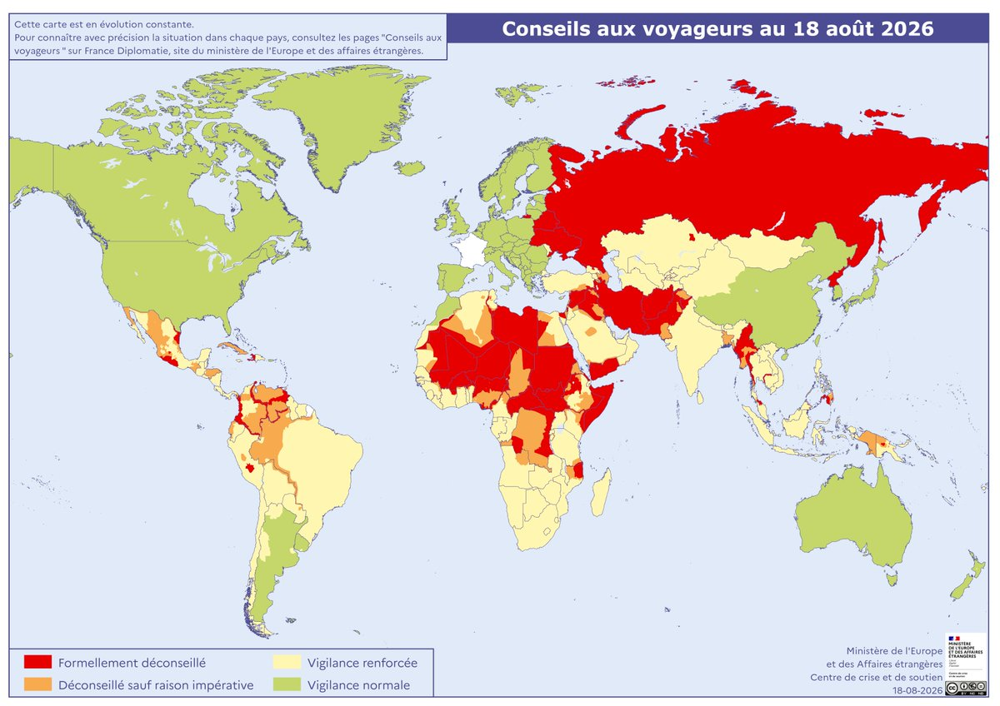

晨雾雾♠️
@NyaMist5
@swyxy4484 现在新疆的和平时间远不及动乱时间的十分之一，甚至网络防火墙的建立也和新疆那次事件有直接关系，不要去抨击没遇见过的事，09-16年的新疆不是在你眼里那个安全的新疆

无人机咻咻咻
@swyxy4484
法国政府发布全球旅行建议评估地图
- 红色—— 建议千万不要前往
- 橙色—— 除必要情况外，不建议前往
- 黄色—— 建议去了提高警惕
- 绿色—— 正常警惕
- 白色—— 法国本土
来源：法国欧洲和外交部，2026年8月18日。 https://t.co/6xAGGCnXlf